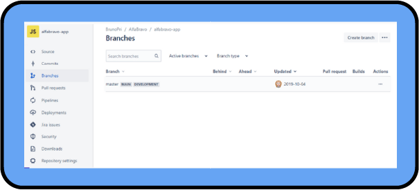

Como sugestão, configure a opção de leitura de caracteres e de pontuação de seu leitor de tela para o grau máximo de leitura, a fim de que os códigos disponibilizados neste material sejam lidos corretamente. No caso do NVDA (NonVisual Desktop Access), para localizar a opção Grau de pontuação/símbolos, acesse Preferências – Configurações – Fala. Altere o padrão Pouco para Tudo. Dessa forma, o leitor passará a ler os segmentos de código em sua totalidade.
Como é sabido, os softwares estão sempre evoluindo. Para que a manutenção seja realizada, ou seja, modificações, novas versões, correções de erros, entre outros, é necessário um controle, que geralmente é realizado por meio de ferramentas e métodos específicos. Com a utilização dos repositórios, é possível controlar e notificar o que ocorre durante todo o ciclo de vida do sistema/software. Utiliza-se, então, a gerência de configuração de software, tornando o processo mais rastreável e, ainda, indispensável dentro de equipes de desenvolvimento que, por muitas vezes, trabalham em conjunto nos códigos.
Explicando de uma forma mais clara, um repositório é uma “pasta” onde são disponibilizados os arquivos de um projeto, incluindo-se, aqui, o versionamento. Um repositório pode ser criado ou baixado com base em alguma hospedagem, de onde se baixa os projetos para uma máquina local, ou, ainda, para onde são enviadas as alterações realizadas. Assim, o desenvolvimento ocorre de forma descentralizada, em que cada desenvolvedor tem uma versão total do repositório em sua máquina local e envia somente os “pedaços” alterados para que todos possam pegar do repositório.
Falando ainda sobre os repositórios, quando os arquivos são baixados e somente o que foi implementado é enviado, você está trabalhando com versões. Logo, você faz o versionamento do que foi alterado para que se possa manter o controle e a manutenção dos repositórios, evitando que ocorram sobrescritas ou perdas de arquivos.
Existem algumas plataformas de repositórios que podem ser citadas como exemplos: GitHub, BitBucket e GitLab. O GitHub foi um dos primeiros utilizados em hospedagem de repositórios, e qualquer pessoa que tenha cadastro na plataforma pode colaborar com projetos open source ou privados.
O BitBucket também é uma plataforma destinada à hospedagem e à gerência de código-fonte de projetos, sendo indicado para equipes pequenas, permitindo que sejam criados, de forma gratuita, repositórios privados para no máximo cinco desenvolvedores. Além disso, o BitBucket tem integração com Jira e Trello, o que permite que os repositórios sejam gerenciados por meio dessas ferramentas.
O GitLab também é uma plataforma para hospedar e gerenciar códigos-fonte e permite que qualquer usuário possa criar repositórios públicos ou privados, com a diferença de que os privados têm quantidade limitada de usuários.
Nos repositórios, são feitos os commits de tudo o que foi trabalhado, de novas versões, de ajustes, entre outros. Tudo o que é realizado dentro do repositório fica registrado, conforme apresentado na figura a seguir.
Clique ou toque para ampliar.
Figura 1 – Exemplo de repositório no BitBucket
Fonte: Senac EAD (2023)
Imagem da tela do repositório BitBucket nas cores azul e branco, na qual consta a lista de commits realizados, bem como quem os realizou, com as devidas mensagens e datas em que foram executados. Há um menu à esquerda, no qual constam códigos, commits, branches, pull requests, pipelines, tudo o que foi realizado em deploy, segurança e downloads.
Os commits são como fotografias das últimas versões enviadas ao repositório. A cada nova alteração na versão do software, pode-se fechar o commit e guardar no histórico do projeto. Esse histórico, por sua vez, é a união de todos os commits realizados ao longo do projeto, e a cada novo há uma nova versão do projeto.
Ainda no tema dos repositórios, modificações de outros desenvolvedores são disponibilizadas no repositório, assim como as que são realizadas por você. A figura a seguir mostra como funcionam essas operações de check-in e check-out dos códigos dentro do repositório. Mais adiante, serão abordadas as operações e de que forma elas ocorrem por meio da criação e utilização de branches.
Clique ou toque para ampliar.
Figura 2 – Exemplo de operações de entrada e saída de modificações
Fonte: Senac EAD (2023)
Imagem apresenta, à esquerda, a área de trabalho local do desenvolvedor, com suas modificações. Ao centro, é indicado o check-in e o check-out das modificações realizadas. À direita, observa-se a representação de um repositório onde são disponibilizadas as modificações realizadas por outros desenvolvedores.
Para organizar o versionamento do código, utilizam-se branches, que são uma forma de organizar todo o trabalho realizado com versionamento de código. Geralmente se tem uma branch denominada master, onde fica a versão oficial do projeto a ser codificado, mantido ou alterado. Uma branch consiste em uma cópia dos códigos de um software que é gerenciada por um sistema de controle de versão. Ela tem como finalidade auxiliar equipes de desenvolvimento a implementar códigos separando o trabalho em andamento do código testado e estável.
Quando se pensa em fazer uma alteração, o indicado é que seja criada uma ramificação (branch) da master e que se trabalhe somente nela, pois dessa forma o código oficial não é afetado. Sendo assim, ao terminar o trabalho na branch criada, pode-se unir o que foi trabalhado com a master.
Na figura a seguir, veja um exemplo de branch criada no BitBucket.
Clique ou toque para ampliar.
Figura 3 – Exemplo de branch no BitBucket
Fonte: BitBucket (2023)
Imagem de tela do repositório do BitBucket mostrando a branch criada, bem como quem a criou e a data em que isso ocorreu.
Ainda não ficou claro? É possível exemplificar de uma forma mais acessível. Você pode pensar em branches como pastinhas onde são armazenados os commits, conforme mostrado no exemplo da figura a seguir.
Clique ou toque para ampliar.
Figura 4 – Exemplo de histórico de commits no GitHub
Fonte: Senac EAD (2023)
Imagem da tela do repositório GitHub no navegador, apresentando os commits realizados por outros desenvolvedores, bem como quais são os arquivos e as datas em que foram realizados, com fundo preto e letras escritas em branco.
Então, se for realizado um commit na nova branch (ramificação) e não mesclar (fizer merge) com a master, esse commit nunca irá para a versão oficial do código. Cada branch carrega o seu histórico e o que está nela só será transformado em algo oficial quando for realizada a merge com a branch master, e assim será obtida a versão final do projeto.
Alguns comandos como git status, git init e git add serão bastante executados durante a utilização do Git. Esses comandos são respectivamente para verificar como está o repositório, se há alterações, se arquivos foram excluídos e se o diretório em questão é um repositório. O git init inicia um novo repositório, enquanto o git add adiciona todos os arquivos novos que foram trabalhados.
Outros comandos que serão de fundamental importância e que serão trazidos em exemplos mais adiante são: git commit -m “mensagem do commit”, que define que as alterações até aquele determinado momento são uma versão do código-fonte; git push, que envia os arquivos do último commit ao repositório on-line; git pull, que baixa o último commit de um repositório on-line (se não há certeza de que está trabalhando no último commit, o ideal é executar um git pull origin master); e pull request (solicitação de pull), que é uma maneira de propor alguma alteração no código, permitindo que você informe outras pessoas sobre as alterações por push feitas em uma ramificação de um repositório.
Quem mantém o repositório (quem tem permissão de escrita nele) pode revisar e alterar proposta e discutir em cima dela, antes de aprovar e ter aquela alteração de fato incorporada.
Para vincular um repositório local com o GitHub, por exemplo, é necessária a execução dos comandos git remote add origin e git push origin master. Então, serão solicitados o usuário e a senha criados no GitHub.
Um outro comando muito utilizado também, principalmente porque se faz necessário clonar um repositório on-line, para sua máquina local, para que possa realizar a implementação no código, é o git clone endereço do repositório online.
Veja, agora, alguns comandos utilizados para inicializar um repositório Git local, por exemplo, para a criação, o acesso e a inicialização de uma pasta, conforme apresentado na figura a seguir.
Clique ou toque para ampliar.
Figura 5 – Comandos para criação e acesso ao repositório local
Fonte: Senac EAD (2023)
Imagem com fundo preto apresentando o prompt de comando, com os textos: “mkdir workspace” e “cd workspace” em cor branca, fazendo a inicialização do repositório local e entrando nele.
O comando mkdir workspace faz a criação do local e o comando cd workspace acessará o local criado. Para que essa pasta chamada workspace se torne um repositório Git, é necessário executar o comando git init.
Quando se inicia um repositório, automaticamente se tem uma branch master e se dá início nessa branch. Realizar a troca de branches é como fazer a troca de pastas, fazendo-se necessária a execução de um comando para criar nova branch e acessá-la. Se o caso fosse trabalhar com um repositório remoto, ou seja, um repositório hospedado em um servidor, seria necessário executar o comando git clone para fazer o download do projeto existente em vez de iniciar um do zero.
No Git, é possível ter três estados em que o código pode estar dentro de um repositório: working directory, staging area e git diretory (repositor). O working directory corresponde ao estado atual do código, ou seja, aquilo que está sendo trabalhado no momento. A staging area é uma área de preparação antes de fechar um commit de fato, ou seja, é possível enviar alterações e continuar trabalhando no código em vez de fazer o commit, até que o trabalho esteja completamente pronto para fechar o commit, trabalhando de working directory para staging area e vice-versa. Por fim, o git directory é onde são armazenados todos os commits, enviados para o repositório remoto e compartilhados com outros usuários.
É possível verificar o estado em que o código se encontra por meio da execução do comando git status. Se você executar esse comando em um repositório que foi criado recentemente (workspace), não aparecerá nada e a mensagem informada será de que a branch atual é a master, que não há commit e que não há nada para fechar um commit, nenhum arquivo para acompanhar. Veja na figura a seguir o que ocorre após executar o comando.
Clique ou toque para ampliar.
Figura 6 – Execução do comando git status no repositório criado
Fonte: Senac EAD (2023)
Imagem apresentando o prompt de comando, com fundo em cor preta e letras escritas em branco, amarelo e verde, onde foi executado o comando git status e apresentado o resultado em tela.
Quando um arquivo com conteúdo é criado e o comando for executado novamente, o Git apresentará a mensagem de que há arquivos que não estão sendo acompanhados (untracked files), e ele mesmo ensina a adicionar arquivos na staging area. Veja a figura a seguir.
Clique ou toque para ampliar.
Figura 7 – Mensagem após a criação de arquivo com conteúdo e execução do git status
Fonte: Senac EAD (2023)
Imagem apresentando um prompt de comando após a ação de inserir um arquivo ao repositório e executar o comando git status. Ele mostra que há um arquivo a ser adicionado e que a adição deverá ser realizada utilizando o comando git add.
Agora, veja como adicionar o arquivo que você criou para criar um commit no repositório. Para isso, é preciso utilizar o comando git add e adicionar o nome do arquivo, ficando da seguinte forma: git add exercício-de-git.txt.
Após esse comando, pode-se fazer o git status novamente e obter o resultado final com a mensagem informando de que há alterações a serem consolidadas ou, ainda, que se pode remover o arquivo com o comando git rm -cached<file>, pois, se o arquivo foi adicionado sem querer, é possível realizar a remoção. Se, de fato, a necessidade for o commit, pode-se prosseguir executando o comando git commit -m “colocar uma mensagem sobre o que está sendo enviado”, conforme é apresentado na figura a seguir.
Clique ou toque para ampliar.
Figura 8 – Exemplo de execução do git commit
Fonte: Senac EAD (2023)
Imagem do prompt de comando com fundo em cor preta, com o texto “git commit -m entre aspas adiciona o arquivo exercício-de-git.txt”, escrito nas cores branco, amarelo, verde e azul, apresentando a mensagem de que o arquivo foi adicionado, ou seja, que houve a modificação e inserção no repositório.
Além dos comandos realizados para inserção, remoção, commit de arquivos e verificação do status do repositório, também se pode utilizar o comando git log para ajudar a visualizar o que está dentro do repositório no git directory. Ao executá-lo, será apresentada a lista de commits que foram realizados e, para que saia do leitor do histórico, é necessário pressionar a letra q no seu teclado. Na figura a seguir, é apresentado o resultado com base na execução do comando git log no prompt de comando dentro do repositório.
Clique ou toque para ampliar.
Figura 9 – Exemplo de execução do comando git log
Fonte: Senac EAD (2023)
Imagem com fundo na cor preta, com letras escritas na cor branca, apresentando o resultado da execução do comando git log, mostrando que foi adicionado o arquivo.
Diante do que foi apresentado até aqui, você aprendeu uma série de comandos a serem realizados no repositório para a adição, deleção e modificação de arquivos. Você também já sabe fazer a inicialização de repositórios, por meio de diferentes plataformas, bem como a verificação de status e logs destes. Já sabe, também, a respeito das branches e para que elas servem.
Agora você aprenderá mais a respeito da utilização de branches (ramificações) e merges (mesclagens). Imagine que você precisa criar uma área de testes antes de solidificar seu trabalho na branch master. Para iniciar, utilize o comando git checkout, para criar e trocar de branch para que o histórico da master não fique bagunçado. Esse cuidado se deve ao fato de que o histórico é algo muito importante e funciona como se fosse uma documentação do seu código.
Para você criar uma branch e passar a utilizá-la, a sintaxe é git checkout -b nome_da_branch. Execute o comando git checkout com o parâmetro -b e o nome da branch que será criada e utilizada. Se quiser apenas trocar de uma branch para outra, execute o comando da seguinte forma: git checkout nome_da_branch. Além de ser utilizado para trocar de branches, o comando git checkout também pode ser usado para reverter o seu código para uma versão anterior, se utilizar, em vez do nome da branch, o hash (id) de um commit antigo. Conforme apresentado na figura a seguir, ocorreu a criação e a troca para a branch denominada “teste” no exemplo dado.
Clique ou toque para ampliar.
Figura 10 – Exemplo de criação e troca para a nova branch criada
Fonte: Senac EAD (2023)
Imagem apresenta a criação da branch denominada “teste” utilizando o comando git checkout -b e o nome da branch. Em seguida, é executado o comando git status, em que é mostrado que não há nada a ser comitado. A imagem tem fundo na cor preta e texto referente aos comandos na cor branca.
Agora, como exemplo, você criará um arquivo com o seu nome, adicioná-lo ao stage e fechar um commit. Siga o passo a passo:
priscila.goncalves@NB-005378 MINGW64 ~/alfabravo-app (teste)
$ echo "meu nome é fulano de tal" > fulanodetal.txt
priscila.goncalves@NB-005378 MINGW64 ~/alfabravo-app (teste)
$ git status
Onbranch teste
Untracked files:
(use "gitadd
fulanodetal.txt
nothing added to commit but untracked files present (use "git add" to track)
priscila.goncalves@NB-005378 MINGW64 ~/alfabravo-app (teste)
$ git add fulanodetal.txt
warning: in the working copy of 'fulanodetal.txt', LF will be replaced by CRLF the next time Git touches it
priscila.goncalves@NB-005378 MINGW64 ~/alfabravo-app (teste)
$ git commit -m "adiciona arquivo com meu nome"
[teste 75d7ae2] adiciona arquivo com meu nome
1 file changed, 1 insertion(+)
Create mode 100644 fulanodetal.txt
Agora que você tem duas branches, uma com um commit a mais do que a outra (no caso, a branch teste tem um a mais do que a master), é preciso unir as duas para formar o histórico ideal. Para que isso ocorra, você deve executar o comando git merge nome_da_outra_branch. Para que funcione corretamente, é preciso estar na branch que receberá os commits realizados da branch teste.
A merge (mesclagem) é uma forma de unificar aquilo que foi feito em outras branches. Para essa mesclagem, utilize git merge em conjunto com git checkout para ter a certeza de que a head está apontando para a branch correta (que deverá receber as alterações) para selecionar a branch atual e utilize git branch -d para excluir algo que não faça mais sentido.
O git merge combina as sequências de commits realizadas em um único histórico. Conforme você aprendeu anteriormente, basta realizar o comando git checkout nome_da_branch (que, neste caso, é a master). Quando se realizam merges, podem ocorrer conflitos no momento em que elas ocorrerem, editando o conteúdo dos arquivos afetados com indicações visuais, marcando o conteúdo em conflito. Essas marcações são <<<<<<<<, ====== e >>>>>>>>. Dessa forma, é possível encontrar facilmente os conflitos a serem resolvidos.
Veja, a seguir, como ficará a execução e como fazer a troca de teste para master:
priscila.goncalves@NB-005378 MINGW64 ~/alfabravo-app (teste)
$ git checkout master
Switched to branch 'master'
Your branch is up to date with 'origin/master'.
priscila.goncalves@NB-005378 MINGW64 ~/alfabravo-app (master)
$
Faça, agora, a merge das branches executando o comando a seguir:
priscila.goncalves@NB-005378 MINGW64 ~/alfabravo-app (master)
$ git merge teste
Updating 912b7aa..75d7ae2
Fast-forward
fulanodetal.txt | 1 +
1 file changed, 1 insertion(+)
Create mode 100644 fulanodetal.txt
priscila.goncalves@NB-005378 MINGW64 ~/alfabravo-app (master)
$
Seu trabalho com o arquivo está concluído. Você aprendeu a criar branch, trabalhar na branch nova criada e realizar merge com a branch principal.
Agora, você aprenderá como deletar a branch criada para aquela implementação específica, pois não terá mais serventia para você. O primeiro passo é saber quantas branches há no repositório. Para isso, execute o comando git branch, no qual o asterisco (*) informará em qual branch se está no momento da execução:
priscila.goncalves@NB-005378 MINGW64 ~/alfabravo-app (master)
$ git branch
* master
teste
Esse caso está mostrando que a branch em que se está é a master e que existe, no repositório, a branch teste (que foi criada para o exemplo). Agora, delete a branch teste com o comando git branch -d nome_da_branch.
priscila.goncalves@NB-005378 MINGW64 ~/alfabravo-app (master)
$ git branch -d teste
Deleted branch teste (was 75d7ae2).
Suponha que as alterações que você fez na master causaram erros no código e é preciso reverter isso. Você pode reverter essas alterações fazendo o uso do comando git revert numero_do_commit, o qual já traz a mensagem descritiva da reversão.
Espera-se que você tenha conseguido aprender um pouco a respeito de manutenção de repositórios, criação e utilização de branches e execução de merges. Sobretudo, espera-se que você tenha percebido a importância de utilizar controles de versões para que possa trabalhar em equipe com controle do histórico, marcação e resgate de versões estáveis, ramificação de projeto (branches), maior segurança, rastreabilidade, organização e confiança.
Veja, aqui, uma sugestão de exercícios que você poderá fazer para fixar o que aprendeu nesta unidade curricular (UC).
Comece criando uma conta no GitHub ou no BitBucket. Depois, crie um repositório on-line, vincule com o repositório local, utilize os comandos anteriormente apresentados aqui, clone repositórios de colegas e faça pull de alterações que os colegas fizerem.